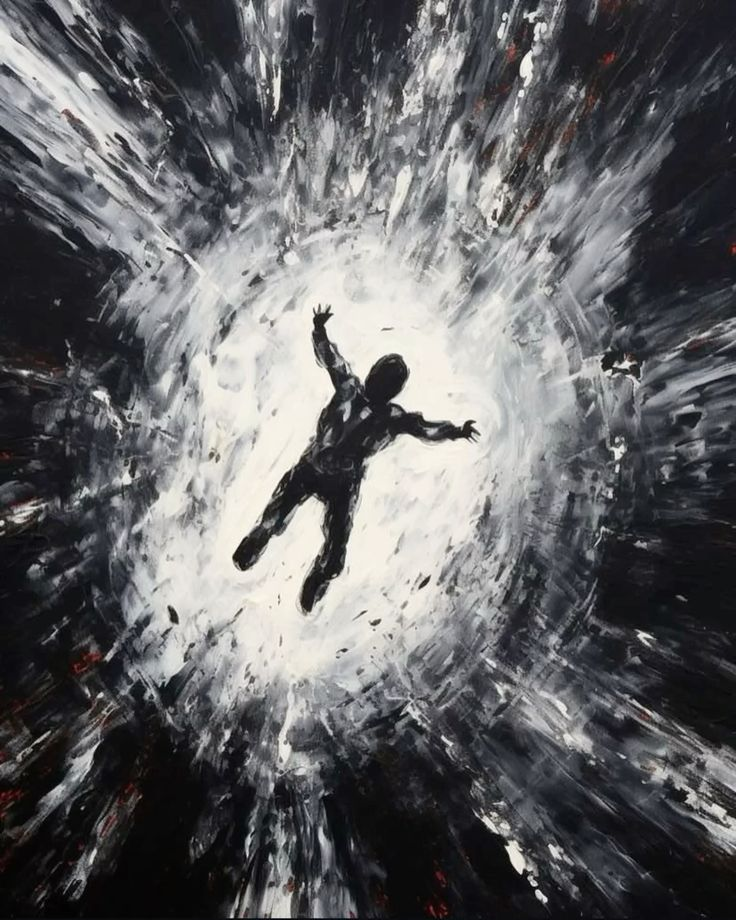

Kita selalu menginginkan lebih.
Ketika belum memiliki sesuatu, kita menginginkannya.
Ketika akhirnya mendapatkannya, rasa puas itu datang sebentar.
Kemudian hilang.
Dan kita mulai menginginkan sesuatu yang lain.
Lebih banyak uang.
Lebih banyak pencapaian.
Lebih banyak perhatian.
Lebih banyak pengalaman.
Lebih banyak dari kehidupan.
Seolah-olah ada sesuatu yang salah dengan keadaan kita sekarang.
Seolah-olah kehidupan yang kita miliki belum cukup untuk disebut kehidupan yang baik.
Manusia memiliki kemampuan yang aneh untuk terbiasa dengan apa yang sebelumnya sangat diinginkannya.
Sesuatu yang dulu terasa seperti impian, setelah dimiliki berubah menjadi standar baru.
Gaji yang dulu kita bayangkan akan membuat kita bahagia akhirnya menjadi sesuatu yang biasa.
Barang yang dulu kita anggap mewah akhirnya terasa kurang.
Pencapaian yang dulu kita rayakan akhirnya menjadi sesuatu yang harus dilampaui.
Kita terus memindahkan garis akhir.
Dan mungkin karena itu, kita tidak pernah benar-benar sampai.
Kita sering mengatakan bahwa kita mengejar kehidupan yang lebih baik.
Tetapi apa arti “lebih baik”?
Lebih kaya?
Lebih terkenal?
Lebih nyaman?
Lebih dihormati?
Lebih bebas?
Atau hanya lebih baik dibandingkan orang lain?
Karena jika kehidupan yang kita inginkan selalu ditentukan oleh sesuatu yang berada di atas kita, maka tidak akan pernah ada titik di mana kita merasa cukup.
Akan selalu ada seseorang yang memiliki lebih banyak.
Lebih muda.
Lebih kaya.
Lebih sukses.
Lebih menarik.
Lebih jauh.
Dan selama kita terus menggunakan kehidupan orang lain sebagai ukuran untuk kehidupan kita sendiri, kata cukup akan selalu berada di luar jangkauan.

Mungkin masalahnya bukan karena manusia memiliki keinginan.
Keinginan adalah bagian dari manusia.
Tanpa keinginan, mungkin tidak akan ada penemuan, karya, ambisi, atau perubahan.
Masalahnya muncul ketika keinginan berhenti menjadi sesuatu yang kita miliki dan mulai menjadi sesuatu yang memiliki kita.
Kita bekerja untuk mendapatkan uang.
Kemudian mendapatkan uang agar bisa membeli waktu.
Lalu menggunakan waktu untuk bekerja lebih banyak agar mendapatkan lebih banyak uang.
Siklusnya terus berjalan.
Dan pada suatu titik kita lupa untuk bertanya:
Untuk apa semua ini?
Ada sesuatu yang ironis tentang kehidupan modern.
Kita memiliki lebih banyak daripada generasi sebelumnya.
Tetapi tidak selalu merasa lebih puas.
Kita memiliki akses terhadap hampir seluruh dunia melalui sebuah layar.
Kita bisa berbicara dengan seseorang yang berada ribuan kilometer jauhnya.
Kita bisa mendapatkan barang tanpa meninggalkan rumah.
Kita bisa melihat kehidupan jutaan manusia dalam hitungan detik.
Namun semakin banyak yang bisa kita lihat, semakin banyak pula yang terasa kurang.
Karena selalu ada kehidupan lain untuk dibandingkan.
Selalu ada sesuatu yang belum kita miliki.
Selalu ada tempat yang belum kita datangi.
Selalu ada pencapaian yang belum kita raih.
Internet mungkin tidak menciptakan rasa tidak cukup.
Tetapi ia membuat kita tidak pernah kehabisan alasan untuk merasa demikian.
Dan mungkin yang paling berbahaya adalah ketika kita mulai menganggap kelelahan sebagai bukti bahwa kita sedang menuju sesuatu.
Kita bangga mengatakan bahwa kita sibuk.
Bangga dengan kurang tidur.
Bangga dengan jadwal yang penuh.
Bangga karena tidak punya waktu.
Seolah-olah semakin lelah seseorang, semakin berharga hidupnya.
Kita takut berhenti.
Karena ketika berhenti, kita mungkin harus berhadapan dengan pertanyaan yang selama ini kita hindari:
Apakah semua yang kita kejar benar-benar kita inginkan?
Atau kita hanya terus berlari karena tidak tahu bagaimana caranya berhenti?
Mungkin manusia tidak pernah benar-benar mengejar “lebih”.
Mungkin yang kita kejar adalah perasaan yang kita bayangkan akan datang setelah mendapatkan lebih.
Kita berpikir uang akan memberikan ketenangan.
Pencapaian akan memberikan harga diri.
Pengakuan akan memberikan kepastian.
Kepemilikan akan memberikan kebahagiaan.
Tetapi setelah mendapatkannya, kita menemukan sesuatu yang mengecewakan:
Perasaan itu tidak bertahan selamanya.
Maka kita mencari sesuatu yang baru.
Dan siklus itu dimulai lagi.
Ada kemungkinan bahwa kita tidak kekurangan sesuatu.
Mungkin kita hanya tidak pernah belajar merasa cukup.
Tetapi merasa cukup bukan berarti berhenti berkembang.
Bukan berarti menyerah.
Bukan berarti tidak memiliki ambisi.
Mungkin merasa cukup berarti mampu mengatakan:
“Aku masih menginginkan sesuatu, tetapi aku tidak membenci hidupku karena belum memilikinya.”
Karena ada perbedaan antara ingin memiliki kehidupan yang lebih baik dan merasa bahwa kehidupan yang sekarang tidak layak dijalani.
Dan mungkin sebagian dari kita telah terlalu lama hidup dalam yang kedua.
Pada akhirnya, kita semua akan meninggalkan sesuatu.
Uang.
Barang.
Jabatan.
Pencapaian.
Nama.
Semua yang kita kumpulkan akan tetap berada di dunia ketika kita tidak lagi berada di dalamnya.
Maka mungkin pertanyaannya bukan:
“Berapa banyak yang bisa kita dapatkan?”
Tetapi:
“Berapa banyak yang sebenarnya kita butuhkan sebelum kita akhirnya merasa cukup?”
Dan mungkin pertanyaan yang lebih sulit adalah:
Jika tidak ada lagi yang perlu kita buktikan kepada siapa pun, apa yang masih ingin kita kejar?